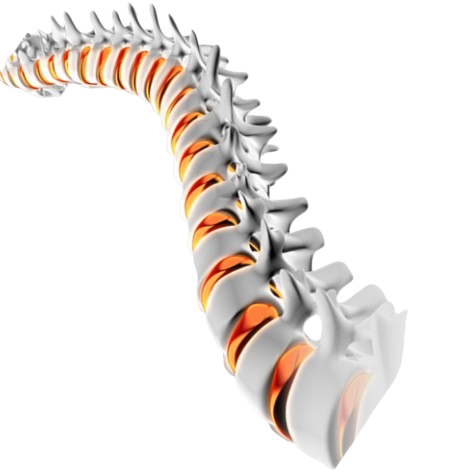

Surgery to repair a torn meniscus in the knee, preserving the cartilage structure.
Myelopathy
Compression of the spinal cord, often due to degenerative changes in the spine, leading to neurological symptoms.
Neuromonitoring
The use of electrophysiological monitoring during surgery to ensure nerve and spinal cord function is maintained.
Open Reduction
Surgical procedure to realign a broken bone by making an incision at the fracture site.
Orthopedic Chisel
A tool with a sharp edge used to carve or cut bone.
Orthopedic Drill
A surgical tool used to create holes in bone for screw or pin insertion.
Orthopedic Implant
A device placed inside the body to support or replace a damaged bone or joint.
Orthopedic Surgery
Surgical treatment of musculoskeletal system disorders, including bones, joints, and muscles.
Osseointegration
The process where bone grows into and integrates with an implant, providing stable fixation.
Osteolysis
Destruction or loss of bone tissue, often around joint replacements.
Osteophyte Removal
Surgical removal of bone spurs that form on joints due to arthritis.
Osteotome
A surgical instrument resembling a chisel used to cut or reshape bone.
Periosteal Elevator
A surgical tool used to lift and separate the periosteum (the tissue covering the bone) from the bone surface.
Radiculopathy
Compression or irritation of a nerve root, causing pain, numbness, or weakness along the affected nerve path.
Reamer
A tool used in orthopedic surgery to enlarge and shape bone cavities,such as in joint replacements.
Reduction Clamp
A surgical instrument
used to hold bone
fragments in place
during fracture
reduction.